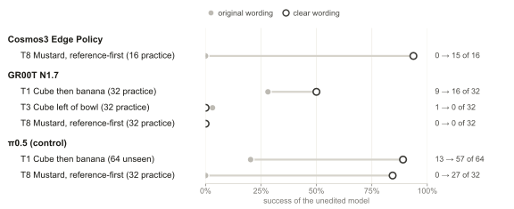
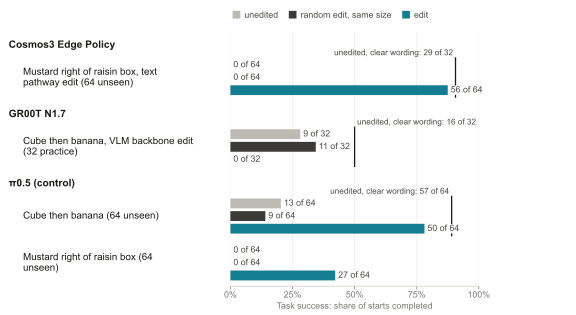

TL;DR
- The fix. A closed-form weight edit makes NVIDIA’s Cosmos3 Edge succeed from 56 of 64 new starts, as often as rewording the instruction does.
- When it works. Only where the robot reads; on NVIDIA’s models, only when the clearer wording swaps words in place. Predicted in advance, it held.
- The cost. It breaks the two other tasks that say “left”, and rebuilding it to protect them didn’t help.
Contents
The robot can do the task, but misreads it
A robot policy can have the skill for a task and still fail it, because of how the goal is worded. Here is one task from RoboLab, a simulated benchmark, as two wordings of the same goal:
Fails “Move the mustard bottle on the table so that the raisin box is to the left of the mustard bottle.”
Works “Move the mustard bottle on the table so that the mustard bottle is to the right of the raisin box.”
| Model | Raisin box firststarts completed | Mustard firststarts completed |
|---|---|---|
| Cosmos3 Edge | 0 of 32 | 31 of 32 practice starts |
| π0.5 | 0 of 64 | 52 of 64 |
| GR00T N1.7 | 0 of 32 | 0 of 32 practice starts |
Same goal, same starting scenes, same weights; only the order of the words changes. So Cosmos3 Edge and π0.5 can do the task: they misread the instruction. GR00T N1.7 fails both ways, a different problem we come back to at the end.
That raises a simple question. If a clearer wording works, could the original wording be made to work too, without changing a word?
Edit the weights, keep the words
If a clearer wording works, its effect already exists inside the network. Each of these models has a part that reads the instruction and a part that turns what it read into motion, and the clearer wording changes the reading part first; everything after it follows.
So we record moments where the robot fails, replay them with the clearer wording, and compute, layer by layer, the weight change that makes the original words produce what the clearer words produce inside the reading part. It is one least-squares solve per layer: no training and no new data. The robot still receives the original instruction.
- A reads the instruction. In π0.5 it is a vision-language model (PaliGemma); in GR00T N1.7, NVIDIA’s Cosmos-Reason2 model; in Cosmos3 Edge, the path the instruction’s words take through the network (its text pathway). Under the clear wording, A’s internal states change first; B and C change only because A did.
- The edit copies that change into A’s weights, so the original wording produces it. That copies the cause.
- Copied into B or C, the same change lands on states that also depend on where the robot is, so it copies a symptom: it needs an on/off switch, leaks into other moments, or breaks the task.
To know an edit is doing something specific, we compare it with a random edit of exactly the same size, a placebo, from the same starting scenes.
It works on π0.5
We first built this on π0.5, an open robot policy (the weightsmith post). On Cube then banana, a task it misreads the same way, the edit lifts it from 2 to 40 of 64 unseen starts: scenes never used to build or choose the edit. A random edit of the same size stays at 2. Its own edit for the mustard task works too.
But π0.5 is one model. Would the same trick work on robots built very differently?
Does it carry over to NVIDIA’s models?
NVIDIA’s robot models are built very differently from π0.5. Cosmos3 Edge Policy is a world-action model: one network predicts the video of what will happen and the robot’s actions together. GR00T N1.7 reads the scene and the instruction with a reasoning language model, Cosmos-Reason2, and plans the motion with a diffusion model.
We ran all three on the same RoboLab tasks, in NVIDIA’s Isaac Sim, from the same starting scenes, each edit next to its random placebo. We start with Cosmos3 Edge.
On Cosmos3 Edge, the edit works as well as the clearer wording
On 64 unseen starts, the edited Cosmos3 Edge succeeds 56 times. Unedited it succeeds none of the time, and so does the robot with a random edit of the same size.
Given the clearer wording instead, the unedited robot succeeds 56 times. The edit gets all the way there, and the robot still reads the original words.
Mustard right of raisin box: starts the robot completed, of 64 unseen starts
So the idea carries over, at least to Cosmos3 Edge. How do the three models compare?
All three models at a glance
| Row | Cosmos3 Edge | GR00T N1.7 | π0.5 |
|---|---|---|---|
| The fix | Mustard right of raisin box: 0 → 56 of 64; random edit 0; clearer wording 56 | Cube then banana: 9 → 0 of 32 practice; random edit 11; clearer wording 16 | Cube then banana: 2 → 40 of 64; random edit 2; clearer wording 36 · Mustard right of raisin box: 0 → 28 of 64; random edit 0; clearer wording 52 |
| Where it works | Where it reads: reading part 13 of 16, motion part 0 of 16 practice starts | Nowhere: every placement made it worse (reading part 0 of 32, motion part 0 of 32 practice starts) | Where it reads: reading part 55 of 64, motion part 20 of 64, final layer 0 of 64 |
| Side effects | Breaks Cube left of bowl 13 → 0 and Mustard in left bin 9 → 0; no clear change elsewhere | Nothing to map: no edit passed its own task | Lifts Eyeglasses 12 → 21; no clear change elsewhere |
Two things decide whether the edit works: where in the model it goes, and how the two wordings line up.
It only works where the robot reads
We wrote the same edit into each part of each model. Where the instruction is read, the edit copies the cause, and everything downstream follows. In the motion part it has to copy a symptom, which also depends on where the robot is.
How often the robot completed the task, with the edit placed in each part
- robot with the edit
- robot with a random edit of the same size
- robot without any edit
Replays of recorded moments, our offline check before any run on the robot, agree. On Cosmos3 Edge the reading-part edit reproduces 91% of the clearer wording’s effect on the planned motion; the motion-part edit, 23%.
Where the edit goes is one condition. The other is the wording itself.
The words have to line up
The edit copies the clearer wording’s effect onto the matching words of the original. On the mustard task the two wordings have the same length and swap words in place, so every word has a match, and the edit works.
When the clearer wording adds words, the new words have nothing to land on. That is why the edit failed on Cosmos3 Edge’s Cube left of bowl and GR00T N1.7’s Cube then banana. Copying only the words both wordings share does nothing at all.
π0.5 is the exception, for a reason: it reads the camera images together with the whole instruction, so a clearer wording’s effect also reaches positions both wordings share, and the edit can copy it from there.
We wrote this rule down before testing a new pair of wordings. On a pair of equal length, Cube left of bowl worded bowl-first vs cube-first, the edit lifted the task from 1 to 12 of 32 unseen starts, far above a random edit. On a pair of unequal length, it failed its offline check, as predicted.
| Case | The two wordings | Result |
|---|---|---|
| Mustard right of raisin box, Cosmos3 Edge | Same length, swapped in place | 0 → 56 of 64 unseen starts |
| Cube left of bowl, Cosmos3 Edge | Words added | Failed the offline check |
| Cube then banana, GR00T N1.7 | Words added | Worse: 9 → 0 of 32 practice starts |
| Mustard right of raisin box, only the shared words copied | — | No more than a random edit, in replays |
| Predicted: Cube left of bowl, worded bowl-first vs cube-first | Same length, swapped in place | 1 → 12 of 32 unseen starts; random edit 3 |
| Predicted: Cube in front of bowl, worded bowl-first vs cube-first | Words added | Failed the offline check |
Even where it works, though, the edit is not free.
The fix has a cost
Run unchanged on every other task, the edit breaks the two other tasks whose instructions say “left”. Cube left of bowl drops from 13 to 0 of 32 unseen starts; on Mustard in left bin the robot carries the mustard to the other bin.
The edit was built from one sentence pair that turns “left of” into “right of”. It seems to have taught the reading part something like “left means right”, well beyond that sentence.
π0.5’s cube-then-banana edit, run the same way, lifted Eyeglasses and broke nothing clearly.
The Mustard right of raisin box edit, unchanged, on every other task
Could the edit be rebuilt to spare the other tasks?
Protecting other instructions doesn’t help
We rebuilt it twice, telling it to leave other instructions unchanged: 65 unrelated instructions, then 24 left/right instructions from other tasks. Both kept the fix, and both still broke Mustard in left bin.
| Edit | Mustard right of raisin boxthe task it was built for | Mustard in left bina “left” task |
|---|---|---|
| The edit | 0 → 56 of 64 | 9 → 0 of 32 |
| The edit + 65 unrelated instructions kept unchanged | 0 → 12 of 16 practice starts | 8 → 0 of 16 practice starts |
| The edit + 24 left/right instructions from other tasks kept unchanged | 0 → 13 of 16 practice starts | 8 → 2 of 16 practice starts |
A third rebuild copied only the words both wordings share. In replays it barely touched the “left” tasks, but it lost the fix too, doing no more than a random edit. The fix and the damage are the same change.
What about giving the damaged task an edit of its own?
A second edit can’t undo it
Cosmos3 Edge also misreads Cube left of bowl: a more specific wording lifts it from 13 to 26 of 32 practice starts. But that wording adds words, and the cube-left edit failed its offline check, which is one of the cases that showed us the rule. Stacked on top of the mustard edit, it failed the check too, so neither ran on the robot.
GR00T N1.7 is a different story.
GR00T N1.7 has nothing to fix
GR00T N1.7 mostly fails at the motion itself, not at reading. Unedited, it completes only 3 of the 9 tasks at all. A clearer wording helps only on Cube then banana, and not clearly: 9 → 16 of 32 practice starts.
Copying that wording into the weights made things worse wherever we put it: 9 → 0 of 32, while a random edit of the same size stayed near where it started. The clearer wording adds a clause, so the edit can only land on the matched words, and there it moves the robot’s first reach.
What this means
Some robot failures are reading failures. When a clearer wording works, its effect is already inside the network, and a closed-form edit can move it into the weights; on Cosmos3 Edge, as well as the wording itself. The edit works where the instruction is read and when the wordings line up, two conditions we could state, and test, before running the robot. And an edit that changes how a model reads one sentence can change how it reads others, so every edit has to be checked on the tasks it was not built for.
Limits
- Simulation only. Every number comes from RoboLab tasks in Isaac Sim, none from a physical robot.
- Small samples. 16 to 64 starts per comparison detect only large changes: at 64 starts, about 19 percentage points.
- One released version of each model, each with its own cameras and number of steps per plan: compare what an edit fixes or breaks within a model, not success across models.
- Cosmos3 Edge’s wiring (the instruction reaches the motion only through its words) was read from the code that served its sibling, Cosmos3 Nano.
All numbers and records
Every table, figure and record behind the story, per model and per task: start numbers, how many starts each edit fixed or broke, p-values and the internal names of tasks and edits. Nothing here is needed to follow the page.
All numbers and records
Task names and terms
The tables below use the tasks’ internal codes and a few technical terms. The names on the rest of the page map to them as follows.
| Task | Code | RoboLab class | Default instruction |
|---|---|---|---|
| Cube then banana | T1 | RubiksCubeThenBananaTask | Put the cube then the banana in the bowl |
| Eyeglasses | T2 | PickGlassesTask | Pick up the eye glasses |
| Cube left of bowl | T3 | RubiksCubeLeftOfBowlTask | Put the rubiks cube to the left of the bowl |
| Yellow on red | T4 | StackYellowOnRedTask | Stack the yellow block on the red block |
| Mustard in left bin | T5 | MustardInLeftBinTask | Put the mustard in the left bin |
| Three-cube tower | T6 | Stack3RubiksCubeTask | Stack the rubiks cubes in a tower |
| Flat box | T7 | PickUpGreenObjectTask | Pick up the green vegetable block |
| Mustard right of raisin box | T8 | MustardRightOfRaisinRFTask | Move the mustard bottle on the table so that the raisin box is to the left of the mustard bottle. |
| Cube in bowl | R1 | RubiksCubeTask | Put the cube in the bowl |
| Cube left of bowl, worded bowl-first vs cube-first | S1L | RubiksCubeLeftOfBowlTask | Move the rubiks cube on the table so that the bowl is to the right of the rubiks cube. |
| Cube in front of bowl, worded bowl-first vs cube-first | S1F | RubiksCubeInFrontOfBowlTask | — |
- Slots
- the numbers of the starting scenes: practice starts 30000–30031, unseen starts 96000–96063, the same for every model. π0.5 numbers from the paper’s evaluation, on slots 20000–95071 with RoboLab’s performance render preset: clearer wording (Yellow on red); edit (Eyeglasses, Cube left of bowl, Yellow on red, Mustard in left bin, Three-cube tower, Flat box); where to edit; edit size; retention. Every other π0.5 number is from the shared starts, with the default preset.
- 13 / 0, fixed / broke
- starts where only the edited robot succeeded / starts where only the unedited robot did.
- p
- exact McNemar test on those starts: the chance of a split at least this lopsided if the edit did nothing.
- +87.5 points [78.1, 95.3]
- change in success, in percentage points, with its paired bootstrap 95% interval.
- Teacher, clear wording
- the unedited model given the clearer wording. Recovery: (edited − unedited) / (teacher − unedited).
- Random control
- a random edit with the same layers and the same size, a placebo.
- Offline, gap closed
- in replays of recorded moments, the share of the clear wording’s change to the planned actions that an edit reproduces. Deviation: how far an edit moves the planned hand position from the unedited robot’s.
- Distilled edit
- an edit that copies the clear wording, this page’s method. Blind editor: an AI editor (Claude or GPT) that worked alone on one task and never saw our edits; its accepted π0.5 edit is gated (it has an on/off switch). Least norm: the smallest change that does the job, always on.
- Model parts
- VLM: vision-language model, π0.5’s reading part; action expert: π0.5’s motion part; action head: the final output layer. Cosmos3 Edge: text pathway (reading part), video/action or generation pathway (motion part). GR00T N1.7: backbone, Cosmos-Reason2 (reading part); DiT, the diffusion action head (motion part).
- Edit names
- t8und: the edit for Mustard right of raisin box, “the mustard edit”; t3und: the edit for Cube left of bowl, “the cube-left edit”, built the same way from its more specific wording; t8t3und: the cube-left edit built on top of the mustard edit, “both edits together”; t8gen: the same copy written into Cosmos3 Edge’s motion part; t8undp: + 65 unrelated instructions kept unchanged (preservation keys); t8undr: + 24 left/right instructions from other tasks kept unchanged; t8unds: only the words both wordings share (template positions) + the 65 unrelated instructions.
- Render preset
- the simulator’s image quality setting; all fresh runs use RoboLab’s default.
At a glance
| Row | Cosmos3 Edge Policyworld-action model | GR00T N1.7reasoning-backbone VLA | π0.5OpenPI VLA, control |
|---|---|---|---|
| Cube then banana | Mustard right of raisin box edit: 18 → 18 of 329 / 9; p = 1 | 9 → 0 of 32 practice starts0 / 9, p = 0.0039 | 2 → 40 of 6438 / 0, p = 7.3 × 10⁻¹²; paper’s evaluation: fixed: 27 → 106 of 128 |
| Eyeglasses | Mustard right of raisin box edit: 4 → 1 of 160 / 3; p = 0.25 | unedited 0 of 32not edited | Cube then banana edit: 12 → 21 of 3212 / 3; p = 0.035; paper’s evaluation: Cube then banana edit: 22 → 44 of 64 |
| Cube left of bowl | Mustard right of raisin box edit: 13 → 0 of 320 / 13; p = 2.4 × 10⁻⁴ | unedited 1 of 32not edited | Cube then banana edit: 1 → 6 of 326 / 1; p = 0.12; paper’s evaluation: Cube then banana edit: 8 → 36 of 64 |
| Yellow on red | Mustard right of raisin box edit: 24 → 22 of 324 / 6; p = 0.75 | unedited 0 of 16not edited | no gainlookalike perception; no clear wording; shared slots, unedited: 9 of 16; shared slots, Cube then banana edit: 21 → 27 of 32 |
| Mustard in left bin | Mustard right of raisin box edit: 9 → 0 of 320 / 9; p = 0.0039 | unedited 0 of 32not edited | no gainown edit 8 → 11 of 64; the grasp slips; shared slots, unedited: 3 of 16; shared slots, Cube then banana edit: 7 → 6 of 32 |
| Three-cube tower | Mustard right of raisin box edit: 1 → 1 of 321 / 1; p = 1 | unedited 0 of 16not edited | no gainown edit 35 → 39 of 64; shared slots, unedited: 6 of 16; shared slots, Cube then banana edit: 6 → 6 of 16 |
| Flat box | Mustard right of raisin box edit: 0 → 0 of 160 / 0; p = 1 | unedited 0 of 32not edited | no gaina missing skill; 0 of 64 unedited; shared slots, unedited: 0 of 16; shared slots, Cube then banana edit: 0 → 0 of 32 |
| Mustard right of raisin box | 0 → 56 of 6456 / 0, p = 2.8 × 10⁻¹⁷ | unedited 0 of 32not edited | 0 → 28 of 6428 / 0, p = 7.5 × 10⁻⁹; paper’s evaluation: fixed: 0 → 27 of 64 |
| Cube in bowl | 24 → 28 of 32 | unedited 28 of 32not edited | 31 → 31 of 32paper’s evaluation: kept: 32 → 32 of 32 |
| Rendering: performance → default preset | — | 5 → 16 of 16Banana onto plate | — |
| Random control, same size | control 0, unedited 0, edit 56 of 64Mustard right of raisin box | control 11, unedited 9, edit 0 of 32 practice startsCube then banana | control 2, unedited 2, edit 40 of 64Cube then banana |
| Where to edit | text pathway 13, video-action (generation) pathway 0 of 16Mustard right of raisin box, 16 practice starts; unedited 0 | Cosmos-Reason2 backbone 0, diffusion action head 0 of 32Cube then banana, 32 practice starts; unedited 9 | VLM 55, action expert 20, head 0 of 64Cube then banana; unedited 5; only the VLM edit transfers |
Per model
- π0.5 OpenPI VLA, control Edits lifted success on Cube then banana from 2 to 40 of 64 unseen starts (p = 7.3 × 10⁻¹²) and on Mustard right of raisin box from 0 to 28 of 64 (p = 7.5 × 10⁻⁹). A random edit of the same size scored 2 of 64 on Cube then banana, against 2 unedited. No detectable gain on Yellow on red, Mustard in left bin, Three-cube tower, Flat box, failures of perception, contact or missing skill.
- Cosmos3 Edge Policy world-action model Edits lifted success on Mustard right of raisin box from 0 to 56 of 64 unseen starts (p = 2.8 × 10⁻¹⁷). A random edit of the same size scored 0 of 64 on Mustard right of raisin box, against 0 unedited.
- GR00T N1.7 reasoning-backbone VLA Unedited, all 9 tasks: Cube then banana 9 of 32, Cube left of bowl 1 of 32 and Cube in bowl 28 of 32; no success on Eyeglasses and Yellow on red, Mustard in left bin, Three-cube tower, Flat box, Mustard right of raisin box. Clearer wording, same weights: Cube then banana 9 → 16 of 32 (p = 0.12); no gain on Cube left of bowl and Mustard right of raisin box. Cube then banana edits in the Cosmos-Reason2 backbone and in the diffusion action head each lowered success on the 32 practice starts they were built from, 9 → 0 (p = 0.0039 each); random edits of the same sizes, 11 and 10 of 32; no held-out runs, since no edit passed practice. Render check: banana onto plate succeeded on 5 of 16 starts under RoboLab’s performance preset and 16 of 16 under the default preset, which all three models now use.
- Side effects π0.5’s Cube then banana edit, run unchanged on Eyeglasses, Cube left of bowl, Yellow on red, Mustard in left bin, Three-cube tower, Flat box, Mustard right of raisin box and Cube in bowl, lifted Eyeglasses (12 → 21 of 32), made none detectably worse, and kept the retention task Cube in bowl at 31 of 32. Cosmos3 Edge Policy’s Mustard right of raisin box edit, run unchanged on Cube then banana, Eyeglasses, Cube left of bowl, Yellow on red, Mustard in left bin, Three-cube tower, Flat box and Cube in bowl, lifted no task, lowered Cube left of bowl (13 → 0 of 32) and Mustard in left bin (9 → 0 of 32), and moved the retention task Cube in bowl from 24 to 28 of 32. Rebuilt with preservation keys, the edit kept Mustard right of raisin box (0 → 12 and 0 → 13 of 16 practice starts) but did not prevent the break on practice starts: with keys from 65 unrelated instructions, Mustard in left bin fell from 8 to 0 of 16; with keys from 24 left/right instructions from other tasks, Mustard in left bin fell from 8 to 2 of 16 and Cube left of bowl from 4 to 1 of 16 (the original edit: 0). GR00T N1.7: not run, because its Cube then banana edits lowered success on Cube then banana itself.
Lifted and worse mean an exact McNemar p < 0.05 on the same starts, edited against unedited.
Cosmos3 Edge Policy. A clearer wording, with the same weights, takes Cube from 13 to 26 of 32 practice starts (p = 0.0023), a gap to distil; a clearer wording, with the same weights, takes Mustard from 0 to 31 of 32 practice starts (p = 9.3 × 10⁻¹⁰), a gap to distil; on Cube the clearer wording tried does not help, so there is nothing to distil; on 64 unseen starts the Mustard edit lifts success from 0 to 56 (p = 2.8 × 10⁻¹⁷), where a random edit of the same size reaches 0; written into the video-action (generation) pathway instead, the same distillation scores 0 of 16 practice starts (unedited 0); run unchanged on other tasks, the Mustard edit lowers Cube left of bowl from 13 to 0 of 32 (p = 2.4 × 10⁻⁴) and lowers Mustard in left bin from 9 to 0 of 32 (p = 0.0039); rebuilt with preservation keys from 65 generic instructions, the edit keeps the Mustard right of raisin box fix (0 → 12 of 16 practice starts) but does not prevent the break: Mustard in left bin still falls from 8 to 0 of 16 practice starts (p = 0.0078); rebuilt with preservation keys from 24 left/right instructions of other tasks, the edit keeps the Mustard right of raisin box fix (0 → 13 of 16 practice starts) but does not prevent the break: Mustard in left bin still falls from 8 to 2 of 16 practice starts (p = 0.031) and Cube left of bowl goes from 4 to 1 of 16 practice starts (p = 0.38; the original edit: 0).
GR00T N1.7. A clearer wording, with the same weights, takes Cube from 9 to 16 of 32 practice starts (p = 0.12), a gap these starts cannot yet tell from noise; on Cube and Mustard the clearer wording tried does not help, so there is nothing to distil; on the 32 practice starts they were built from, Cube edits in the Cosmos-Reason2 backbone and in the diffusion action head each lower success from 9 to 0 (p = 0.0039), where random edits of the same sizes reach 11 and 10. No held-out or side-effect runs were made, since no edit passed practice.
The three models in detail
Cosmos3 Edge Policy
NVIDIA world-action model · complete
- Architecture
- One transformer denoises an action chunk together with future video latents, conditioned on the instruction: a mixture of transformers with 28 layers of width 2048, each holding a text pathway and a generation pathway for video and action tokens. It sees the wrist and both shoulder cameras as one composite image and returns 32 joint-position steps per request, run open loop at 15 Hz.
- Where the instruction enters
- Text tokens attend only to text; video and action tokens attend to the text keys and values in every layer, so the instruction reaches the actions only through those keys and values (read from the code that served Cosmos3 Nano).
- Where an edit can go
- text pathway / video-action (generation) pathway
- Checkpoint
nvidia/Cosmos3-Edge-Policy-DROIData7c7288, 3.37B parameters- How it is scored
- Closed loop on the shared RoboLab DROID tasks and slots; settings of the Same Goal, Different Words study (4 sampling steps, guidance 3).
GR00T N1.7
NVIDIA vision-language-action policy · complete
- Architecture
- A Cosmos-Reason2-2B vision-language backbone (Qwen3-VL), cut to its first 16 language layers, reads an exterior and a wrist camera (180 × 320 each) and the instruction. The action head, 4 self-attention layers and 32 diffusion-transformer blocks, turns the backbone's tokens and the robot state into 40-step chunks by flow matching; the first 8 steps run at 15 Hz.
- Where the instruction enters
- As text tokens in the Cosmos-Reason2 backbone, next to the image tokens (lowercased, punctuation removed). The action head reads the instruction only through the backbone's tokens.
- Where an edit can go
- Cosmos-Reason2 backbone / diffusion action head
- Checkpoint
nvidia/GR00T-N1.7-DROIDat05e7cc9, 3.14B parameters- How it is scored
- Closed loop on the shared RoboLab DROID tasks and slots, NVIDIA's validated client and embodiment setting.
π0.5
OpenPI vision-language-action policy, the control · complete
- Architecture
- An 18-layer PaliGemma vision-language model (VLM) and an 18-layer Gemma action expert. The action expert attends to the VLM's keys and values and produces 15-step action chunks, including a gripper command, by flow matching.
- Where the instruction enters
- As text tokens in the VLM, together with image tokens from two cameras and robot-state tokens, under bidirectional attention, so the image tokens read the instruction. The distilled edit goes into the VLM's MLP weights.
- Where an edit can go
- VLM / action expert / action head
- Checkpoint
pi05_droid_jointpos(OpenPI), about 3.35 billion parameters- How it is scored
- Closed loop on RoboLab in Isaac Sim: on the shared starts with the default render preset, and, for the comparisons not rerun there, the paper’s evaluation (RTX 3090, performance render preset), each with its own slots and number of starts. Trained on DROID data and none of these tasks.
The closed-form edit
At each edited layer:
ΔW = K⊤(KK⊤ + λI)−1Vrows of K: the layer’s inputs under the original wording; rows of V: the clear wording’s change to the layer’s output at the same positions; λ = 10−3 tr(KK⊤)/n
The random control keeps the edit’s layers, rank and singular values and draws random directions.
Protocol
- Failure map
- Unedited success on each task, and how the model fails where that was diagnosed.
- Wording sensitivity
- Unedited success under the original and a clearer wording of the same goal. Without a gap there is nothing to distil.
- Edit and same-size random control
- Unedited → edited on held-out starts never used to build the edit: fixed and broke pairs, exact McNemar p, paired bootstrap 95% CI; against an update with the edit’s layers, rank and singular values in random directions. Also teacher recovery, (edited − unedited) / (teacher − unedited) with the clear wording as the teacher, and the edit’s size.
- Where to edit
- The same distillation in different parts of each model. π0.5: VLM, action expert, action head. GR00T N1.7: Cosmos-Reason2 backbone, diffusion action head. Cosmos3 Edge: text pathway, video-action pathway.
- Side-effect map
- Each model’s main edit, unchanged, on every suite task, paired with the unedited model: transfer where it helps, harm where it hurts, retention on Cube in bowl.
- Noise floor
- Identical weights rerun on the same starts: how often paired outcomes differ, which sets the smallest change a comparison can detect.
Shared slots. All three models use slots 30000–30031 for the failure map and practice, and slots 96000–96063 for held-out comparisons, with identical initial scenes. Edited and unedited models are paired start by start. π0.5 numbers from the paper’s evaluation use other slots, named in each cell (see Slots).
Render preset. Fresh runs of all three models use RoboLab’s default render preset, which is Isaac Lab’s “balanced” setting (no --rendering-type flag) and NVIDIA’s validated configuration. The paper’s evaluation of π0.5 used the performance preset, which renders without the RTX denoiser.
A first cross-model finding. GR00T N1.7 depends on how the simulator renders: on the same 16 starts of banana onto plate it succeeded 5 times under RoboLab’s performance preset, which renders without the RTX denoiser, and 16 times under the default preset, NVIDIA’s validated configuration. All three models are therefore compared under the default preset; the paper’s evaluation of π0.5 used the performance preset. Rendering sensitivity
Statistics. Exact two-sided McNemar test on the fixed and broke pairs; paired bootstrap 95% interval of the difference (20,000 draws over the four paired outcome types, seed 0); Wilson intervals for single rates.
Failure map
![Unedited success per task and model. Cosmos3 Edge Policy: Cube then banana 21 of 32; Eyeglasses 2 of 32; Cube left of bowl 13 of 32; Yellow on red 22 of 32; Mustard in left bin 11 of 32; Three-cube tower 2 of 32; Flat box 0 of 32; Mustard right of raisin box 0 of 32; Cube in bowl 21 of 32. GR00T N1.7: Cube then banana 9 of 32; Eyeglasses 0 of 32; Cube left of bowl 1 of 32; Yellow on red 0 of 16; Mustard in left bin 0 of 32; Three-cube tower 0 of 16; Flat box 0 of 32; Mustard right of raisin box 0 of 32; Cube in bowl 28 of 32. π0.5: Cube then banana 3 of 16; Eyeglasses 7 of 16; Cube left of bowl 0 of 16; Yellow on red 9 of 16; Mustard in left bin 3 of 16; Three-cube tower 6 of 16; Flat box 0 of 16; Mustard right of raisin box 0 of 16; Cube in bowl 16 of 16.](fig/failure-map.svg)

Adapter check, GR00T N1.7. NVIDIA’s unmodified server and RoboLab client against this study’s adapter, default render preset: banana on plate: 16 of 16 with NVIDIA’s, 16 of 16 with ours; Flat box: 0 of 16 with NVIDIA’s, 0 of 32 with ours. The zeros in the failure map are the model’s, not the adapter’s.
| Row | Cosmos3 Edge Policyworld-action model | GR00T N1.7reasoning-backbone VLA | π0.5OpenPI VLA, control |
|---|---|---|---|
| Cube then banana | 21 of 3266%; slots 30000–30031 | 9 of 3228%; slots 30000–30031 | 3 of 1619%; slots 30000–30015; paper’s evaluation: 27 of 128 |
| Eyeglasses | 2 of 326%; slots 30000–30031 | 0 of 320%; slots 30000–30031 | 7 of 1644%; slots 30000–30015; paper’s evaluation: 18 of 64 |
| Cube left of bowl | 13 of 3241%; slots 30000–30031 | 1 of 323%; slots 30000–30031 | 0 of 160%; slots 30000–30015; paper’s evaluation: 8 of 64 |
| Yellow on red | 22 of 3269%; slots 30000–30031 | 0 of 160%; slots 30000–30015 | 9 of 1656%; slots 30000–30015; paper’s evaluation: 13 of 32 |
| Mustard in left bin | 11 of 3234%; slots 30000–30031 | 0 of 320%; slots 30000–30031 | 3 of 1619%; slots 30000–30015; paper’s evaluation: 8 of 64 |
| Three-cube tower | 2 of 326%; slots 30000–30031 | 0 of 160%; slots 30000–30015 | 6 of 1638%; slots 30000–30015; paper’s evaluation: 35 of 64 |
| Flat box | 0 of 320%; slots 30000–30031 | 0 of 320%; slots 30000–30031 | 0 of 160%; slots 30000–30015; paper’s evaluation: 0 of 32 |
| Mustard right of raisin box | 0 of 320%; slots 30000–30031 | 0 of 320%; slots 30000–30031 | 0 of 160%; slots 30000–30015; paper’s evaluation: 0 of 64 |
| Cube in bowl | 21 of 3266%; slots 30000–30031 | 28 of 3288%; slots 30000–30031 | 16 of 16100%; slots 30000–30015; paper’s evaluation: 32 of 32 |
π0.5's cells are from the shared slots where it was run there, else from the paper’s evaluation (the largest run, on its own slots). Its unedited rate on Cube then banana ranged from 8% to 21% across six start sets, so compare models on the shared slots.
Rendering sensitivity
| Row | Cosmos3 Edge Policyworld-action model | GR00T N1.7reasoning-backbone VLA | π0.5OpenPI VLA, control |
|---|---|---|---|
| Same starts: performance → default preset | — | 5 → 16 of 16performance → default; Banana onto plate, the same 16 starts (slots 0–15); 11 / 0, p = 9.8 × 10⁻⁴; NVIDIA's own serving path, default preset: 16 of 16 | — |
Records: cross/groot/results/validation/official-bop16.episode_results.jsonl, cross/groot/results/validation/smoke-bop-s0-default.json, cross/groot/results/validation/smoke-bop-s0.json
The performance preset renders without the RTX denoiser, which leaves speckle noise on every surface; the default preset is NVIDIA's validated configuration. All three models are compared under the default preset. The paper’s evaluation of π0.5 used the performance preset.
Wording sensitivity



| Row | Cosmos3 Edge Policyworld-action model | GR00T N1.7reasoning-backbone VLA | π0.5OpenPI VLA, control |
|---|---|---|---|
| Cube then banana | 21 → 15 of 323 / 9, p = 0.15; −18.8 points [−37.5, 0.0]; slots 30000–30031; “Put the cube then the banana in the bowl” → “Put the cube in the bowl then put the banana in the bowl” | 9 → 16 of 3211 / 4, p = 0.12; +21.9 points [0.0, 43.8]; slots 30000–30031; “Put the cube then the banana in the bowl” → “Put the cube in the bowl then put the banana in the bowl” | 2 → 36 of 64+53.1 points; slots 96000–96063; Put the cube then the banana in the bowl; paper’s evaluation: 13 → 57 of 64 |
| Cube left of bowl | 13 → 26 of 3215 / 2, p = 0.0023; +40.6 points [18.8, 59.4]; slots 30000–30031; “Put the rubiks cube to the left of the bowl” → “Pick up the rubiks cube and place it on the table to the left side of the bowl” | 1 → 0 of 320 / 1, p = 1; −3.1 points [−9.4, 0.0]; slots 30000–30031; “Put the rubiks cube to the left of the bowl” → “Pick up the rubiks cube and place it on the table to the left of the bowl” | — |
| Yellow on red | — | — | no clear wording foundno rewording moved the arm in the blind editor's replays, so there was nothing to distil |
| Mustard right of raisin box | 0 → 31 of 3231 / 0, p = 9.3 × 10⁻¹⁰; +96.9 points [90.6, 100.0]; slots 30000–30031; “Move the mustard bottle on the table so that the raisin box is to the left of the mustard bottle.” → “Move the mustard bottle on the table so that the mustard bottle is to the right of the raisin box.” | 0 → 0 of 320 / 0, p = 1; 0.0 points [0.0, 0.0]; slots 30000–30031; “Move the mustard bottle on the table so that the raisin box is to the left of the mustard bottle.” → “Move the mustard bottle on the table so that the mustard bottle is to the right of the raisin box.” | 0 → 52 of 64+81.2 points; slots 96000–96063; Move the mustard bottle on the table so that the raisin box is to the left of the mustard bottle.; paper’s evaluation: 0 → 27 of 32 |
Reference-first describes the placement from the reference object's side, mustard-first from the moved object's side. In the Same Goal, Different Words study (8 starting layouts per goal, no paired starts), raisin-box-first wording lowered stable placement by 8.1 points for Cosmos3 Edge across 12 goals; on this goal Edge placed 4 of 8 under mustard-first and 0 of 8 under raisin-box-first.
Edits on unseen starts
![Edited minus unedited success on unseen starts, with 95% intervals. Cosmos3 Edge Policy: Mustard right of raisin box, text pathway (und mlp.down…: 0 → 56 of 64. GR00T N1.7: Cube then banana, practice starts: 9 → 0 of 32. π0.5: Cube then banana, VLM (PaliGemma) MLPs, laye…: 2 → 40 of 64; Cube then banana, packaged tool, end to end: 8 → 36 of 64; Cube then banana, blind editor's own edit: 11 → 27 of 64; Eyeglasses, blind editor: 18 → 27 of 64; Mustard in left bin, blind editor: 8 → 11 of 64; Three-cube tower, blind editor: 35 → 39 of 64; Mustard right of raisin box, VLM MLP down-projections l…: 0 → 28 of 64.](fig/edit-gain.svg)

| Row | Cosmos3 Edge Policyworld-action model | GR00T N1.7reasoning-backbone VLA | π0.5OpenPI VLA, control |
|---|---|---|---|
| Cube then banana | — | 9 → 0 of 32 practice startsscored on the practice starts the edit was built from, not on unseen starts; Cosmos-Reason2 LLM layers 0-15, mlp.down_proj (VLM backbone); 0 / 9, p = 0.0039; −28.1 points [−43.8, −12.5]; slots 30000–30031; 1 more edit(s) on this task in the where-to-edit table | 2 → 40 of 64VLM (PaliGemma) MLPs, layers 0-16: prompt + state + image keys; 38 / 0, p = 7.3 × 10⁻¹²; +59.4 points [46.9, 71.9]; slots 96000–96063; paper’s evaluation: 27 → 106 of 128 |
Cube then banana, built end to end by the packaged tool (weightsmith distill) | — | — | 8 → 36 of 64decisions chosen by rule; 33 / 5, p = 4.3 × 10⁻⁶; +43.8 points [28.1, 59.4]; held-out slots 95008–95071 |
| Cube then banana, a blind autonomous editor's own edit | — | — | 11 → 27 of 64gated action-head change, 1,024 values; 22 / 6, p = 0.0037; +25.0 points [9.4, 40.6]; held-out slots 91008–91071 |
| Eyeglasses | — | — | 18 → 27 of 64blind editor's edit; not significant; 18 / 9, p = 0.12; +14.1 points [−1.6, 29.7]; held-out slots 91008–91071 |
| Cube left of bowl | — | — | no edit submittedthe blind editor's candidate scored 5 → 3 of 32 on practice starts and broke grasping |
| Yellow on red | — | — | no gainthree edits, 28 → 21 of 64 each on practice starts; no clear wording to distil |
| Mustard in left bin | — | — | 8 → 11 of 64blind editor's edit; not significant; 9 / 6, p = 0.61; +4.7 points [−6.2, 17.2]; held-out slots 91008–91071 |
| Three-cube tower | — | — | 35 → 39 of 64blind editor's edit; not significant; 17 / 13, p = 0.58; +6.2 points [−10.9, 23.4]; held-out slots 91008–91071 |
| Flat box | — | — | no gainunedited 0 of 64; 10 edits, none succeeded (a skill the policy lacks) |
| Mustard right of raisin box | 0 → 56 of 64text pathway (und mlp.down_proj, layers 0-26); 56 / 0, p = 2.8 × 10⁻¹⁷; +87.5 points [78.1, 95.3]; slots 96000–96063; on the practice starts it was built from: 0 → 13 of 16; 1 more edit(s) on this task in the where-to-edit table | — | 0 → 28 of 64VLM MLP down-projections language.blocks.08-16.mlp.linear (9 tensors), 3 key groups (approach, grasp, transport), rank <= 96 per layer; 28 / 0, p = 7.5 × 10⁻⁹; +43.8 points [31.2, 56.2]; slots 96000–96063; paper’s evaluation: 0 → 27 of 64 |
Records: ctrl/heldout/ctrl-ctb__p1-RubiksCubeThenBananaTask-91008-64.json, ctrl/heldout/ctrl-glasses__p1-PickGlassesTask-91008-64.json, ctrl/heldout/ctrl-mustard__p1-MustardInLeftBinTask-91008-64.json, ctrl/heldout/ctrl-stack3__p1-Stack3RubiksCubeTask-91008-64.json, ctrl/summary.json, opus/comparisons.json, tutorial/tutorial-ctb__ctb-first-95008-64.results.json
Distilled edits copy the clear wording's internal effect (teal in the figures); the blind editors designed their own edits under the same rules (dark). The packaged tool's 2 × 2 table happens to equal the Cube then banana edit's transfer to Cube left of bowl (8 → 36 of 64, 33 / 5): different tasks, different starts.
Random-direction control of the same size



| Row | Cosmos3 Edge Policyworld-action model | GR00T N1.7reasoning-backbone VLA | π0.5OpenPI VLA, control |
|---|---|---|---|
| Cube then banana | — | control 11, unedited 9, edit 0 of 32 practice startspractice starts the edit was built from; slots 30000–30031 | control 2, unedited 2, edit 40 of 64slots 96000–96063; paper’s evaluation: control 9, unedited 13, edit 50 of 64 |
| Mustard right of raisin box | control 0, unedited 0, edit 56 of 64slots 96000–96063 | — | control 0, unedited 0, edit 28 of 64slots 96000–96063; paper’s evaluation: control 0, unedited 0, edit 27 of 64 |
The control keeps every layer's singular values and replaces the singular vectors with random orthonormal bases (seed 0), so its Frobenius norm matches the edit's in every layer.
Teacher recovery
| Row | Cosmos3 Edge Policyworld-action model | GR00T N1.7reasoning-backbone VLA | π0.5OpenPI VLA, control |
|---|---|---|---|
| Cube then banana | — | The edit did clearly less well than the clearer wording (0 vs 16 of 32) practice startsno recovery %: the clearer wording’s own gain (9 → 16 of 32) is not a clear difference (p = 0.12); practice starts | The edit did at least as well as the clearer wording (40 vs 36 of 64; not a clear difference)paper’s evaluation: 84% |
| Mustard right of raisin box | The edit did as well as the clearer wording (56 vs 56 of 64) | — | 54%as reported; (28 − 0) / (52 − 0) of 64; paper’s evaluation: 59% |
100% would mean the edit does everything the clear wording does while the original wording stays.
Where to edit
Offline, on recorded decisions no edit was built from, the share of the clearer wording’s action change each edit reproduces: Cosmos3 Edge Policy’s text pathway edit 91% and video-action (generation) pathway edit 23%; GR00T N1.7’s Cosmos-Reason2 backbone edit −15% and diffusion action head edit 22%. Random edits of the same size: −2% to 1%. Closed loop is what counts: see the figure below and the table.
![π0.5, Cube then banana on 64 unseen starts: unedited 5, Backbone: VLM MLPs 55, Action expert MLPs 20, Action head, least norm 0, Action head, hand-built gate 30. On other tasks only the VLM edit lifts success: eyeglasses 14 → 25, cube left of the bowl 4 → 20 of 32; cube into the bowl stays at 32 of 32. Cosmos3 Edge Policy: text pathway (und mlp.down_proj, layers 0-26) 13, video/action pathway (gen mlp_moe_gen.down_proj, layers 8-20) 0. GR00T N1.7: Cosmos-Reason2 LLM layers 0-15, mlp.down_proj (VLM backbone) 0, GR00T action head: 32 AlternateVLDiT blocks, ff.net.2 (diffusion transformer) 0.](fig/where-to-edit.svg)

| Row | Cosmos3 Edge Policyworld-action model | GR00T N1.7reasoning-backbone VLA | π0.5OpenPI VLA, control |
|---|---|---|---|
| Task, starts | Mustard right of raisin box, 16 practice startsslots 30000–30015 | Cube then banana, 32 practice startsslots 30000–30031 | Cube then banana, 64 unseen startsheld-out slots 94016–94079 |
| Unedited | 0 of 16 | 9 of 32 | 5 of 64 |
| Backbone / text pathway | text pathway (und mlp.down_proj, layers 0-26): 13 of 16 | Cosmos-Reason2 LLM layers 0-15, mlp.down_proj (VLM backbone): 0 of 32 | VLM MLPs: 55 of 6450 / 0, p = 1.8 × 10⁻¹⁵; the VLM's weights also process the image tokens, where this edit is keyed |
| Action pathway | video/action pathway (gen mlp_moe_gen.down_proj, layers 8-20): 0 of 16 | GR00T action head: 32 AlternateVLDiT blocks, ff.net.2 (diffusion transformer): 0 of 32 | action expert 20, action head 0 of 64expert 20 / 5, p = 0.0041; head 0 / 5; a head edit with a hand-built gate (blind editor): 30 |
| Both | — | — | VLM + action expert: 43 of 64below the VLM edit alone, p = 0.017 |
| Offline check: share of the wording’s action change reproduced | text pathway (und mlp.down_proj, layers 0-26): 91% (random, same size: −2%); video/action pathway (gen mlp_moe_gen.down_proj, layers 8-20): 23% (random, same size: 1%)Mustard right of raisin box, 30 recorded decisions held aside, never used to build either edit; share of the clearer wording’s action change reproduced, by end-effector distance at the end of the action chunk; offline, no rollouts | backbone: −15% (random, same size: 0%); action head: 22%Cube then banana, 11 failed practice decisions that no build used; share of the clearer wording’s action change reproduced, as the projection of the edit’s change onto the wording’s over the executed actions (joints and gripper); offline, no rollouts | — |
| Which one transfers | — | — | only the backbone editeyeglasses 14 → 25, cube left of the bowl 4 → 20 of 32; action expert 11 and 2, gated head 12 and 1 (all p ≥ 0.38); slots 94016–94047 |
| Size of each | — | — | VLM 13.4%, expert 1.8% of values; head 8,056median change per layer: VLM 1.7% of the weight norm, action expert 99% |
Records: opus/comparisons.json, opus/where/results/heldout_analysis.json, opus/where/results/size_summary.json, opus/where/results/transfer_glasses_analysis.json, opus/where/results/transfer_left_analysis.json
In π0.5 the VLM's weights process image and text tokens alike, and the edit is keyed at the image tokens. In Cosmos3 the video and action tokens have their own weights (the generation pathway), so its closest counterpart is the video-action pathway; the text pathway is the other candidate. In GR00T the backbone is Cosmos-Reason2-2B and the action pathway is the diffusion head.
Edit size
| Row | Cosmos3 Edge Policyworld-action model | GR00T N1.7reasoning-backbone VLA | π0.5OpenPI VLA, control |
|---|---|---|---|
| Cube then banana | — | 167,481,274 valuesCosmos-Reason2 LLM layers 0-15, mlp.down_proj (VLM backbone) | 450,468,837 valuesVLM (PaliGemma) MLPs, layers 0-16: prompt + state + image keys; paper’s evaluation: 450,468,837 values (13.4%) |
| Cube then banana, smaller variant (image cells, layers 8–16) | — | — | 5.3M as factors (0.16%)image cells, layers 8–16, rank ≤ 32 per layer; 19 → 102 of 128 unseen starts; stored values changed 248,057,499; the packaged tool's edit uses this recipe |
| Cube then banana, smallest edit that passed unseen starts | — | — | 1,024 valuesthe blind editor's gated action-head change |
| Mustard right of raisin box | 179,010,015 valuestext pathway (und mlp.down_proj, layers 0-26) | — | 275,482,328 valuesVLM MLP down-projections language.blocks.08-16.mlp.linear (9 tensors), 3 key groups (approach, grasp, transport), rank <= 96 per layer; paper’s evaluation: 15.9M as factors (0.47%) |
Records: ctrl/summary.json, opus/heldout/cube-then-banana__abl-imgl8-RubiksCubeThenBananaTask-90000-128.json
A low-rank update is dense in its weight matrix: the 0.16% variant changes 7.4% of stored values; as factors it is 0.16% of the parameters.
Side effects
![Change in successes after each model's main edit, on every task, paired on the same starts. Cosmos3 Edge Policy: Cube then banana ±0: 18 → 18 of 32; Eyeglasses −3: 4 → 1 of 16; Cube left of bowl −13: 13 → 0 of 32 (significant); Yellow on red −2: 24 → 22 of 32; Mustard in left bin −9: 9 → 0 of 32 (significant); Three-cube tower ±0: 1 → 1 of 32; Flat box ±0: 0 → 0 of 16; Mustard right of raisin box +56: 0 → 56 of 64 (significant); Cube in bowl +4: 24 → 28 of 32. GR00T N1.7: Cube then banana −9: 9 → 0 of 32 (significant). π0.5: Cube then banana +38: 2 → 40 of 64 (significant); Eyeglasses +9: 12 → 21 of 32 (significant); Cube left of bowl +5: 1 → 6 of 32; Yellow on red +6: 21 → 27 of 32; Mustard in left bin −1: 7 → 6 of 32; Three-cube tower ±0: 6 → 6 of 16; Flat box ±0: 0 → 0 of 32; Mustard right of raisin box ±0: 0 → 0 of 32; Cube in bowl ±0: 31 → 31 of 32.](fig/side-effects.svg)

| Row | Cosmos3 Edge Policyworld-action model | π0.5OpenPI VLA, control |
|---|---|---|
| Cube then banana | ±0: 18 → 18 of 329 / 9; p = 1; slots 96000–96031; practice starts: 21 → 18 of 32, p = 0.63 (slots 30000–30031) | +38: 2 → 40 of 6438 / 0; p = 7.3 × 10⁻¹²; the target task; slots 96000–96063; paper’s evaluation: +79: 27 → 106 of 128 |
| Eyeglasses | −3: 4 → 1 of 160 / 3; p = 0.25; slots 96000–96015; practice starts: 2 → 0 of 32, p = 0.5 (slots 30000–30031) | +9: 12 → 21 of 3212 / 3; p = 0.035; slots 96000–96031; paper’s evaluation: +22: 22 → 44 of 64 |
| Cube left of bowl | −13: 13 → 0 of 320 / 13; p = 2.4 × 10⁻⁴; slots 96000–96031; practice starts: 13 → 0 of 32, p = 2.4 × 10⁻⁴ (slots 30000–30031) | +5: 1 → 6 of 326 / 1; p = 0.12; slots 96000–96031; paper’s evaluation: +28: 8 → 36 of 64 |
| Yellow on red | −2: 24 → 22 of 324 / 6; p = 0.75; slots 96000–96031; practice starts: 22 → 26 of 32, p = 0.39 (slots 30000–30031) | +6: 21 → 27 of 329 / 3; p = 0.15; slots 96000–96031; paper’s evaluation: +3: 14 → 17 of 32 |
| Mustard in left bin | −9: 9 → 0 of 320 / 9; p = 0.0039; slots 96000–96031; practice starts: 11 → 0 of 32, p = 9.8 × 10⁻⁴ (slots 30000–30031) | −1: 7 → 6 of 326 / 7; p = 1; slots 96000–96031; paper’s evaluation: +5: 7 → 12 of 32 |
| Three-cube tower | ±0: 1 → 1 of 321 / 1; p = 1; slots 96000–96031; practice starts: 2 → 3 of 32, p = 1 (slots 30000–30031) | ±0: 6 → 6 of 163 / 3; p = 1; slots 96000–96015; paper’s evaluation: +5: 14 → 19 of 32 |
| Flat box | ±0: 0 → 0 of 160 / 0; p = 1; slots 96000–96015; practice starts: 0 → 0 of 32, p = 1 (slots 30000–30031) | ±0: 0 → 0 of 320 / 0; p = 1; slots 96000–96031; paper’s evaluation: ±0: 0 → 0 of 32 |
| Mustard right of raisin box | +56: 0 → 56 of 6456 / 0; p = 2.8 × 10⁻¹⁷; the target task; slots 96000–96063 | ±0: 0 → 0 of 320 / 0; p = 1; slots 96000–96031; paper’s evaluation: not run |
| Cube in bowl | +4: 24 → 28 of 327 / 3; p = 0.34; slots 96000–96031; practice starts: 21 → 27 of 32, p = 0.15 (slots 30000–30031) | ±0: 31 → 31 of 320 / 0; p = 1; slots 96000–96031; paper’s evaluation: ±0: 32 → 32 of 32 |
Each model's main edit, unchanged, on every suite task; π0.5's is the Cube then banana edit. In the paper’s evaluation it harmed none of fifteen other surveyed tasks detectably.
No GR00T N1.7 edit passed its own task (Cube then banana: 9 → 0 of 32 practice starts), so there was nothing to map.
Can the side effect be prevented? Full table
The Mustard right of raisin box edit t8und breaks Mustard in left bin (mustard into the left bin) and Cube left of bowl (cube left of the bowl), the two other tasks whose instructions say “left”. The Cosmos3 Edge track rebuilds it with zero-change preservation keys: other instructions, added as rows of K with zero rows of V, whose layer outputs the solve must keep. For t8undr a rule fixed before the build leaves out every Cube left of bowl, Mustard in left bin and Mustard right of raisin box instruction and object pair, so Cube left of bowl and Mustard in left bin stay unseen tests; it has its own random control. t8unds tests whether the word-for-word alignment causes the break: it aligns only the template around the instruction, leaves the differing words unconstrained, and keeps the generic keys of t8undp.
| Edit | Mustard right of raisin boxthe task it was built for | Mustard in left bina “left” task | Cube left of bowla “left” task | In replaysshare of the clear wording’s effect | Hand movedMustard in left bin, in replays; lower is better |
|---|---|---|---|---|---|
t8undthe edit for Mustard right of raisin box, as above | 0 → 56 of 64p = 2.8 × 10⁻¹⁷; practice 0 → 13 of 16; random control 0 of 64 | 9 → 0 of 32p = 0.0039; practice 11 → 0 of 32 | 13 → 0 of 32p = 2.4 × 10⁻⁴; practice 13 → 0 of 32 | 91%30 recorded moments; random edit: −1.8% | 13.7 cm38 recorded moments; Cube left of bowl: 29.6 cm on 20 |
t8undp+ preservation keys from 65 generic RoboLab instructions | 0 → 12 of 16 practice startsp = 4.9 × 10⁻⁴ | 8 → 0 of 16 practice startsp = 0.0078 | —not run: we went on only if a rebuild saved Mustard in left bin | 93%30 recorded moments | 13.9 cm38 recorded moments |
t8undr+ preservation keys from 24 left/right instructions of other RoboLab tasks | 0 → 13 of 16 practice startsp = 2.4 × 10⁻⁴ | 8 → 2 of 16 practice startsp = 0.031 | 4 → 1 of 16 practice startsp = 0.38 | 94%30 recorded moments; random edit: −10.5% | 5.9 cm38 recorded moments; Cube left of bowl: 6.5 cm on 20 |
t8undsonly the instruction template aligned, + the 65 generic preservation keys | —not run: in replays it reproduced too little of the clear wording’s effect | —not run: in replays it reproduced too little of the clear wording’s effect | —not run: in replays it reproduced too little of the clear wording’s effect | 1.9%30 recorded moments; random edit: 2.6% | 2.0 cm38 recorded moments; Cube left of bowl: 0.8 cm on 20 |
Records: cross/metrics_cosmos.json, cross/cosmos/README.md
Closed loop: unedited → edited on the same starts, unseen where run, else practice (tagged). Offline, on recorded decisions, before any closed loop: Mustard right of raisin box gap closed is the share of the clearer wording’s action change a build reproduces on held-aside Mustard right of raisin box decisions; Mustard in left bin deviation is how far the build moves the action chunk from the unedited policy’s on Mustard in left bin practice decisions the unedited policy solved (Cube left of bowl the same way, in the detail). These decide which builds run closed loop.
t8undp (preservation keys from 65 generic instructions) keeps the Mustard right of raisin box fix (0 → 12 of 16 practice starts) but does not prevent the break: Mustard in left bin still falls from 8 to 0 of 16 practice starts (p = 0.0078); offline it closes 93% of the Mustard right of raisin box gap and moves Mustard in left bin’s actions 13.9 cm (t8und: 13.7 cm) from the unedited policy’s. t8undr (preservation keys from 24 left/right instructions of other tasks) keeps the Mustard right of raisin box fix (0 → 13 of 16 practice starts) but does not prevent the break: Mustard in left bin still falls from 8 to 2 of 16 practice starts (p = 0.031) and Cube left of bowl goes from 4 to 1 of 16 practice starts (p = 0.38; t8und: 0); offline it closes 94% of the Mustard right of raisin box gap and moves Mustard in left bin’s actions 5.9 cm (t8und: 13.7 cm) and Cube left of bowl’s 6.5 cm (t8und: 29.6 cm) from the unedited policy’s, so the smaller offline deviation on Mustard in left bin and Cube left of bowl does not carry over to the closed loop. t8unds (only the instruction template aligned and the 65 generic preservation keys): offline it closes 1.9% of the Mustard right of raisin box gap and moves Mustard in left bin’s actions 2.0 cm (t8und: 13.7 cm) and Cube left of bowl’s 0.8 cm (t8und: 29.6 cm) from the unedited policy’s; closed loop running.
Can a second edit undo the damage? Full table
Cosmos3 Edge also misreads Cube left of bowl: a more specific wording, “Pick up the rubiks cube and place it on the table to the left side of the bowl”, lifts it from 13 to 26 of 32 practice starts. So we gave that task its own edit, built the same way as the mustard edit, and then applied both edits together, the second built on top of the first. Cells are unedited → edited, from the same starts: unseen starts unless tagged practice.
| Edit | Mustard right of raisin boxthe mustard edit’s task | Cube left of bowlthe cube-left edit’s task | Mustard in left bina “left” task |
|---|---|---|---|
t8undThe mustard edit, built for Mustard right of raisin box | 0 → 56 of 64p = 2.8 × 10⁻¹⁷; practice 0 → 13 of 16; random control 0 of 64 | 13 → 0 of 32p = 2.4 × 10⁻⁴; practice 13 → 0 of 32 | 9 → 0 of 32p = 0.0039; practice 11 → 0 of 32 |
t3undThe cube-left edit, built for Cube left of bowl | Didn’t pass the offline check, so not run on the robotCube left of bowl: −85.6% of the clearer wording’s effect in replays; random edit −2.5%; rule: Cube left of bowl gap closed >= 85% and |control gap closed| <= 15% | ||
t8t3undBoth edits together, the cube-left edit built on top of the mustard edit | Didn’t pass the offline check, so not run on the robotCube left of bowl: +20.9% of the clearer wording’s effect in replays; Mustard right of raisin box: +60.8% of the clearer wording’s effect in replays; rule: Cube left of bowl gap (T8-edited default -> unedited specific) closed >= 85% and Mustard right of raisin box raisin-box-first -> mustard-first gap closed >= 85% | ||
Records: cross/metrics_cosmos.json, cross/cosmos/README.md
Closed loop only. Rules fixed before either build (README): the edits run on the robot only if, in replays, they reproduce at least 85% of the clearer wording’s effect; unseen starts only if practice passes.
The cube-left edit didn’t pass the offline check, so it never ran on the robot: in replays of 30 held-aside moments, it moved the robot’s planned motion further from the clearer wording’s on Cube left of bowl (−86% of the gap); a random edit of the same size, −2.5%. The two wordings are 159 and 167 tokens long, so the edit could only copy the 151 template positions they share, as in the rebuild above that copies only the words both wordings share. Both edits together didn’t pass the offline check either: in replays of 30 held-aside moments, they moved the robot’s planned motion 21% of the way toward the clearer wording’s on Cube left of bowl and 61% of the way toward the clearer wording’s on Mustard right of raisin box, down from 91% with the mustard edit alone.
The prediction, in full
A prediction we tested. Before building anything, we wrote down a prediction (the Cosmos3 Edge track’s README, commit e01cbfe): an edit for a new pair of wordings of equal length would pass the offline check and fix the task; one for wordings of unequal length would fail the check. Cube left of bowl, worded bowl-first vs cube-first, 169 and 169 tokens; unedited, the clearer wording lifts it only from 1 to 7 of 16 practice starts (p = 0.07), a modest gap: in replays the edit closed 96% of the gap to the clearer wording (a random edit of the same size: −1.3%), passing the offline check; on 16 practice starts it went from 1 to 4, against 1 for the random edit and 7 for the clearer wording (p = 0.38); on 32 unseen starts it went from 1 to 12, against 3 for the random edit and 8 for the clearer wording (p = 9.8 × 10⁻⁴); the edit did at least as well as the clearer wording (12 vs 8 of 32; not a clear difference). The prediction held. Cube in front of bowl, worded bowl-first vs cube-first, 166 and 168 tokens: in replays the edit closed 11% of the gap to the clearer wording (a random edit of the same size: +12.6%), failing the offline check. The prediction held.
Retention
| Row | Cosmos3 Edge Policyworld-action model | GR00T N1.7reasoning-backbone VLA | π0.5OpenPI VLA, control |
|---|---|---|---|
| Cube in bowl | 24 → 28 of 32the Mustard right of raisin box edit, unchanged; 7 / 3; p = 0.34; slots 96000–96031; practice starts: 21 → 27 of 32, p = 0.15 (slots 30000–30031) | — | 31 → 31 of 32the Cube then banana edit, unchanged; 0 / 0; p = 1; slots 96000–96031; paper’s evaluation: 32 → 32 of 32 |
| The clear wording, after the edit | — | — | 27 → 23 of 32Mustard right of raisin box under the mustard-first wording, with the Mustard right of raisin box edit; 5 / 9, p = 0.42: not detectable at 32 pairs, not excluded; practice slots 20000–20031 |
| Recorded decisions it must not change | — | — | unchangedall 9 recorded correct carries and all 19 banana-phase decisions unchanged (Cube then banana edit, offline replay) |
Records: sgdw/results/practice_rf_grp3_vs_base.json, sgdw/results/practice_tf_grp3_vs_base.json
At these sample sizes a retention check rules out only large losses (see the noise floor).
Caveats in full
- Simulation only. Every number comes from RoboLab tasks in Isaac Sim; none is from a physical robot.
- One released checkpoint per model. π0.5 was trained on DROID data and on none of these tasks. Each NVIDIA run records its checkpoint and revision.
- Sample sizes. Held-out comparisons use 64 paired starts on the shared slots; the paper’s π0.5 evaluation used 32 to 128 starts on its own slots. With about 30% of pairs differing, 64 pairs reliably detect only changes of about 19 points.
- The paper’s π0.5 evaluation ran on an RTX 3090 under the
performancerender preset, on its own slots; each such cell names its slots and number of starts. - Different interfaces. π0.5 sees two 224 × 224 views and executes 15-step chunks; GR00T N1.7 sees two 180 × 320 views and executes 8 steps of each 40-step chunk; Cosmos3 Edge sees one composite of three views and executes 32 steps open loop. All run at 15 Hz. Compare what an edit fixes and breaks within each model, not absolute success across models.
- Who built the edits. π0.5’s distilled edits were built by an operator session (Claude Opus) under the editor rules; the blind editors’ edits by autonomous editors that saw only their own task. Every held-out score is the operator’s, on starts no editor saw.
- Mustard right of raisin box. Its edit was designed using practice data adaptively; held-out starts were never used for any choice, and its teacher was not run on unseen starts.
- Architecture notes. Layer counts come from each track’s record; that Cosmos3 Edge routes the instruction only through text keys and values was read from the code that served Cosmos3 Nano. Each run’s record states the layers it actually edited.
Noise floor
| Row | Cosmos3 Edge Policyworld-action model | GR00T N1.7reasoning-backbone VLA | π0.5OpenPI VLA, control |
|---|---|---|---|
| Unedited, run twice on the same starts | — | — | 13 vs 9 of 6412 of 64 pairs differ (19%); Cube then banana, held-out slots 90000–90063 |
| Identical edited weights, run twice | — | — | agreed on 46 of 6428% of pairs differ (paper, Appendix B) |
| Unedited rerun, butter on the raisin box | — | — | 14 vs 8 of 1638% of pairs differ; exact p = 0.031 with nothing changed |
| Typical share of pairs that differ | — | — | about 30%a near-neutral one-weight edit: 70 of 192 |
| Smallest detectable change | 19 points at 64 pairsif about 30% of pairs differ | 27 points at 32 pairsif about 30% of pairs differ | 27 / 19 / 14 / 10 pointsat 32 / 64 / 128 / 256 pairs, 80% power, α = 0.05, 30% of pairs differing |
Records: opus/comparisons.json, opus/controls/ctl1-90000-64.analysis.json
Simulated physics on GPUs is not bit-repeatable, and a policy that executes many actions between looks amplifies small differences. Every comparison pairs starts and uses exact tests for that reason.
Records and reproduction
- Paper: Distilling Instructions into Weights: Closed-Form Edits Fix a Robot Policy’s Misreading
- Code and records: github.com/adeeb10abbas/weightsmith
- π0.5 records: held-out runs, random control and teacher, where to edit, blind editors, Mustard right of raisin box wording pilot, the packaged tool, end to end
- Cross-model records, as they land: Cosmos3 Edge, GR00T N1.7, π0.5 on the shared slots
- This page’s numbers: metrics.json; the one-page brief: PDF
Every table, figure and caption here is rebuilt from the records by python3 site/scripts/make_cosmos_metrics.py.
More clips
Rollouts from the run records, each captioned with its start, its outcome and the record it comes from. The NVIDIA clips play at twice real time.
Cosmos3 Edge Policy, Mustard right of raisin box (above): Unseen start 96003, never used to build the edit: the unedited robot on top, the edited robot below, both given the original wording. Unedited: did not succeed in 600 steps; edited: succeeded in 397 steps. Records: T8-base-s96000.json, T8-Et8und-s96000.json.
fm-T1.json, wd-T1-expl.json.fm-T1.json, ed-bb-T1.json, ed-dit-T1.json.T1-base-s30000.json, fm-T1.json.clips.json.clips.json.T5-base-s30000.json, T5-Et8und-s30000.json.clips.json.clips.json.clips.json.Citation
This page is a draft. To cite the work, please cite the paper:
Ali-Adeeb Abbas and Esmaeil Seraj. “Distilling Instructions into Weights: Closed-Form Edits Fix a Robot Policy’s Misreading.” 2026. arXiv preprint, forthcoming.
Or with BibTeX:
@misc{abbas2026distilling,
title = {{Distilling Instructions into Weights: Closed-Form Edits Fix a Robot Policy's Misreading}},
author = {Abbas, Ali-Adeeb and Seraj, Esmaeil},
year = {2026},
url = {https://ali-adeeb.com/weightsmith/},
note = {arXiv preprint, forthcoming}
}